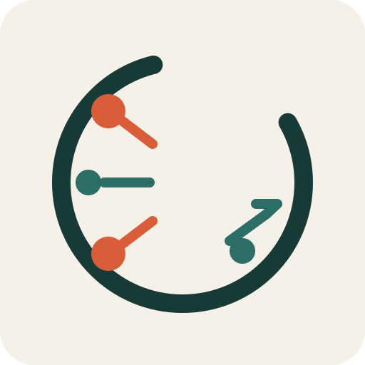
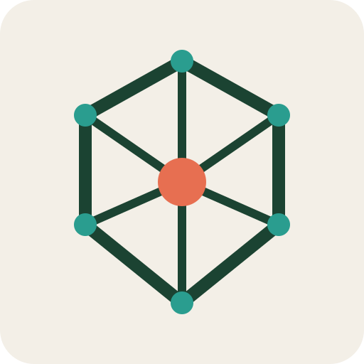

Six quick directions exploring causality, syntax, state, and change propagation.

Chain Reaction CConnected nodes forming a reactive C.Cause -> Effect GlyphA trigger flowing into a resulting block.

AST CrystalBranching structure converging into a stable center.Ripple MarkPropagation rendered as strict geometric waves.State Block MonogramOffset blocks suggest explicit mutation.Semicolon SignalPunctuation-inspired mark with language energy.